A couple years ago, I wouldn't have been able to point out Yerevan on a map. However, after visiting Georgia in 2025, I ran into a ton of travelers raving about how cool the city was, which piqued my interest in a place I had barely heard of. Yerevan is a much more modern city than you probably think, mainly thanks to the Armenian diaspora. It was a complete surprise, and quickly became one of my favorite cities I've visited in the last few years.
The city is one of the oldest continuously inhabited cities in the world and is actually 29 years older than Rome. Yerevan is characterized by well-preserved pink-stone buildings, modern cafes and impressive views of Mt. Ararat. It sits in contrast with the rest of the country, which is noticeably less developed. Downtown Yerevan is walkable, affordable and filled with sights, and it sits within 1 to 2 hours of most of the country's attractions, which makes it the perfect base. I would recommend 3 days in the city, plus extra days for the day trips.
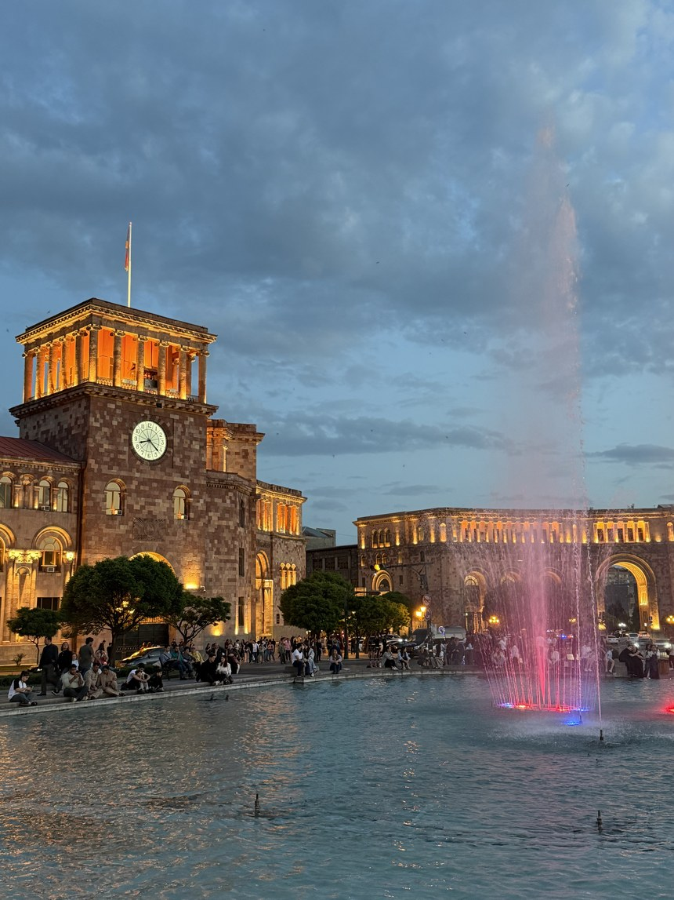
Getting to Yerevan
Yerevan sits right in the center of Armenia and is the country's transport hub, which is what makes everywhere else easy to reach. Armenia is small, a little under the size of Belgium, and only takes 6 to 8 hours to drive from the Georgian border in the north to the Iranian border in the south. Nearly all of the country's air traffic lands here too, so for most people, arriving in Armenia means arriving in Yerevan. Here are the main ways to get there:
- Flights — you'll land at Zvartnots International Airport (EVN), located just 20 minutes west of the city center. The airport is well connected, with direct flights to around 70 destinations including major hubs like Istanbul, Dubai, Doha and Athens
- From the airport, you can easily order a rideshare using Yandex Go or GG for 2,500 to 3,500 AMD ($6 to $9). Make sure to stick to this price! I had a driver try to upcharge me $20 for a late-night ride. Bus 201 also runs into the center for 300 AMD from 7:30 AM to 9:30 PM if you're not in a hurry.
-
Overland routes — Georgia is the only practical land crossing (unless you're currently in Iran!), since the Turkish and Azerbaijani borders are closed. You'll likely be leaving from Tbilisi so here are three ways to cover the 170-mile journey:
- Marshrutka — the shared vans found all over the former Soviet Union, and the cheapest and most popular way locals get around. In Tbilisi, you can leave from either Avlabari metro station or the Ortachala bus station. Arrive early in the morning and expect marshrutkas to only leave when full
- A ticket costs $15 to $20 and the full journey takes 6 hours including the border at Sadakhlo, where everyone gets out with their bags for passport control. No booking ahead, just show up before 9 AM to secure a spot
- Bus — scheduled buses run the same road for about $20 in 5 to 6 hours. You get a reserved seat, a fixed departure, and air conditioning. You can book in person at the bus station or online at Busbud or Omio, both of which open straight onto the Tbilisi to Yerevan route
- Overnight train — a sleeper train leaves Tbilisi at 8:20 PM and pulls into Yerevan at 6:55 the next morning. Second-class compartments run about $35 and first class about $60. The train goes daily in summer and every other day the rest of the year. It sells out in advance, so book a week or two ahead on the Georgian Railway site. The train also runs from Yerevan to Tbilisi if you're considering the opposite route. Border officers come through the carriages around midnight, so keep your passport handy
How to Get Around
When you finally arrive, Yerevan is an extremely easy city to get around. Here are the best options for getting around the city:
- Walkability — all of the main sights are located in the city center, which is easily walkable. Book your accommodation in this area and key sites like Republic Square and the Cascade will be less than 20 minutes on foot, and almost everything in this guide sits inside that walk
- Ridesharing apps — for anything further out, ridesharing apps are your best option. GG is the local app most drivers use and Yandex Go works just as well. Rides across the center are extremely cheap, running 600 to 1,500 AMD ($1.50 to $4), and a car turns up in less than 5 minutes downtown. The one time to skip rideshares is 6 to 8 PM, when the center completely gridlocks and walking is actually faster
- Buses and metro — it might be your first instinct to use public transport. However, both the metro and bus in Yerevan are extremely limited. The metro is only one line with a limited number of stops. The metro ticketing also wouldn't take my foreign card, so bring cash if you want to take it (tickets are 100 AMD each)
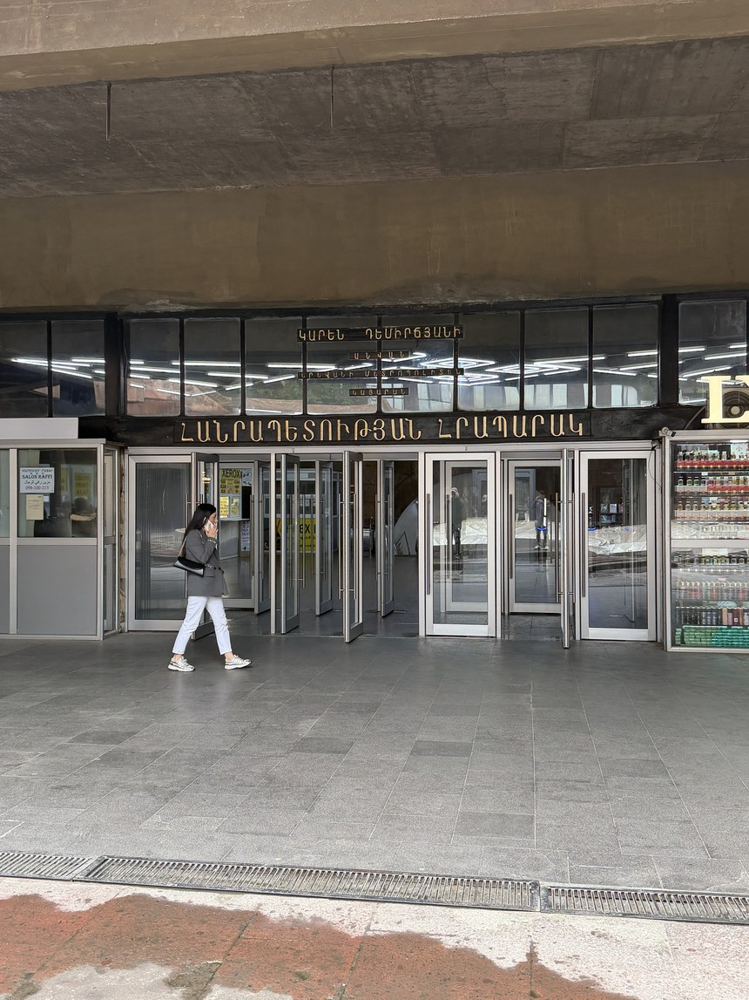
Yerevan — The City Itself
Yerevan is more modern and European than I expected and small enough that you can walk most of the center. The city has been part of many of the world's great empires, and the Persians, Ottomans, Russians and Soviets each left something worth visiting. That is what makes walking around here fun: each sight has its own backstory.
A blue-tiled Persian mosque sits a few streets from a Soviet-era opera house, a fortress older than Rome sits on a hill at the edge of town, and a giant stone staircase climbs the hillside with modern sculpture on every landing. The vast Armenian diaspora sends money home, which is a big part of why the center looks so clean and modern. You can easily fill at least 3 days in the city by visiting a vast array of different sites. Here's where I'd spend my time in the city:
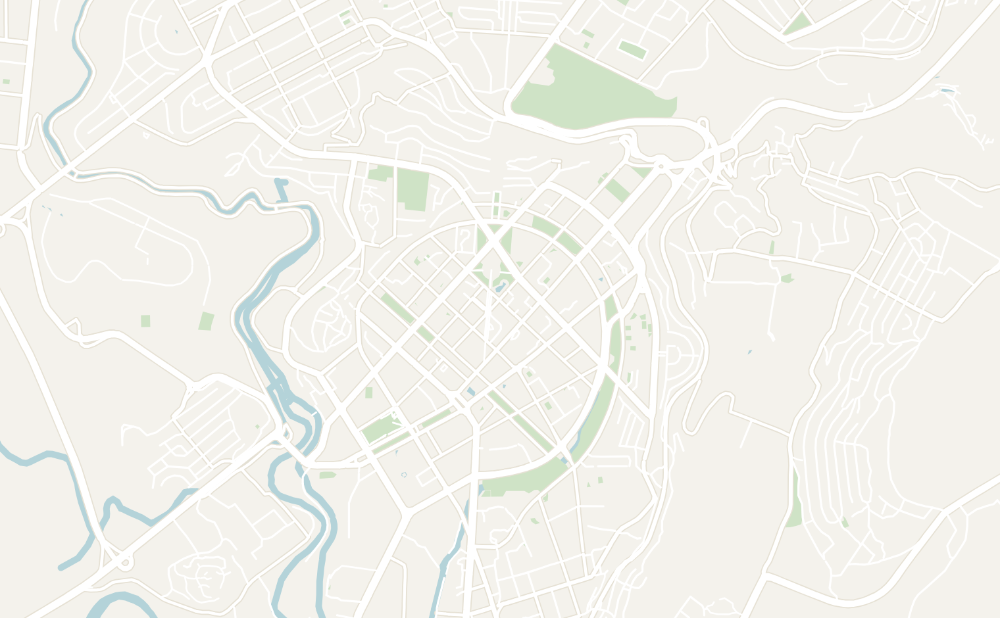
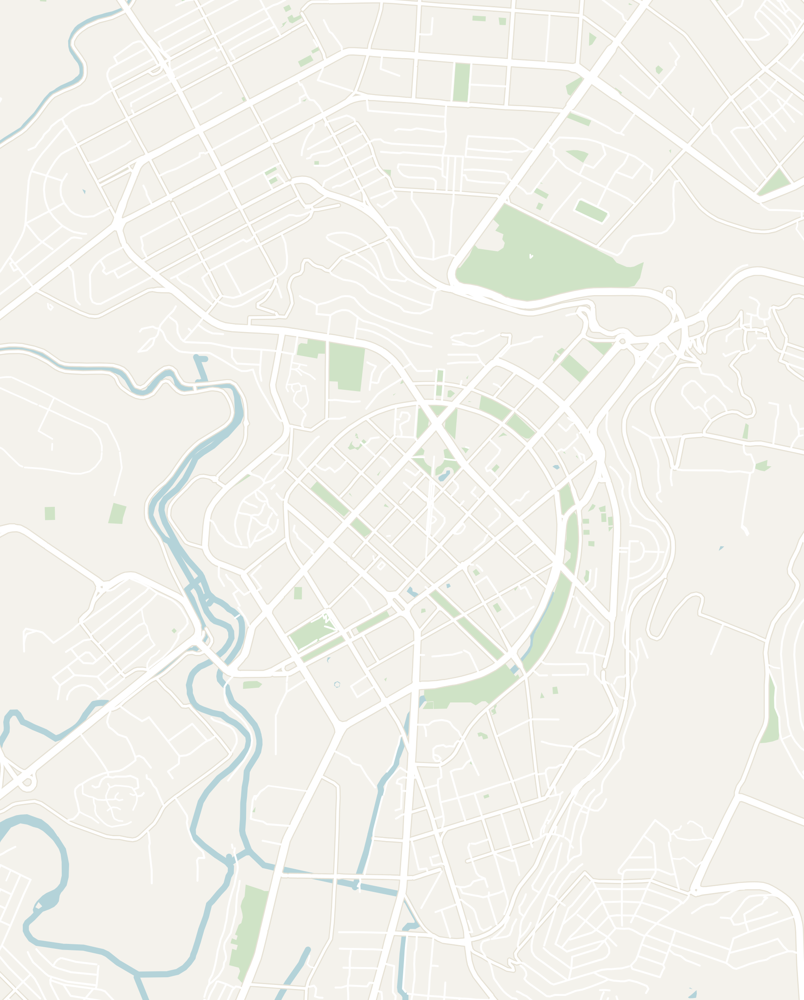
Double-tap to open in Google Maps
Republic Square
Start exploring Yerevan right in the city center. Five striking buildings curve around the city's main square and its Singing Fountains, including the Government House with its clock tower, the History Museum with the National Gallery stacked on the floors above it, and the historic Armenia Hotel (now the Marriott). They are all cut from the same pink volcanic stone that characterizes the city of Yerevan. Most were built in the Soviet era in a classical Armenian style, and they glow red at golden hour. Spend a few minutes admiring the grand architecture before heading to your next destination.
The National Gallery of Armenia is the stop you are most likely to make in Republic Square. It is widely regarded as the best art museum in Armenia, with the famous Armenian painters (Aivazovsky and Saryan) alongside international names (Kandinsky and Donatello).
The gallery sits right on top of the History Museum of Armenia, so you can visit both at once. This museum is home to the oldest leather shoe in the world (over 5,500 years old) and Bronze Age wooden carts and chariots. Both are open Tuesday to Saturday from 11 AM to 5 PM and close early on Sunday. Entry costs 2,000 AMD ($5 USD), and it takes about an hour to visit.
Come back to the square at night to watch the nightly singing fountain show on the museum steps. It starts around 9 PM in the summer and is the perfect activity for the family. The fountain lights up in a dozen colors and the jets shoot sky-high in bursts timed to the classical music. It runs about half an hour, April to November, and it is popular with locals, who bring the kids or a date.
Guided Walking Tour
I always recommend a walking tour as a great way to get your bearings in a new country. The experience is even more valuable in Armenia because nothing here explains itself: the history is long, dark and layered, and knowing the background is key to understanding the country today.
I booked a walking tour on GuruWalk led by a guide named Ioanna, who was gracious in explaining the history and honest in answering any question we had. She covered over 2,000 years of Armenian history, engaging and never dry, from the first Christian kingdom through the Soviet decades, the genocide, all the way up to life today. A local's perspective reframed how I looked at everything for the rest of the week.
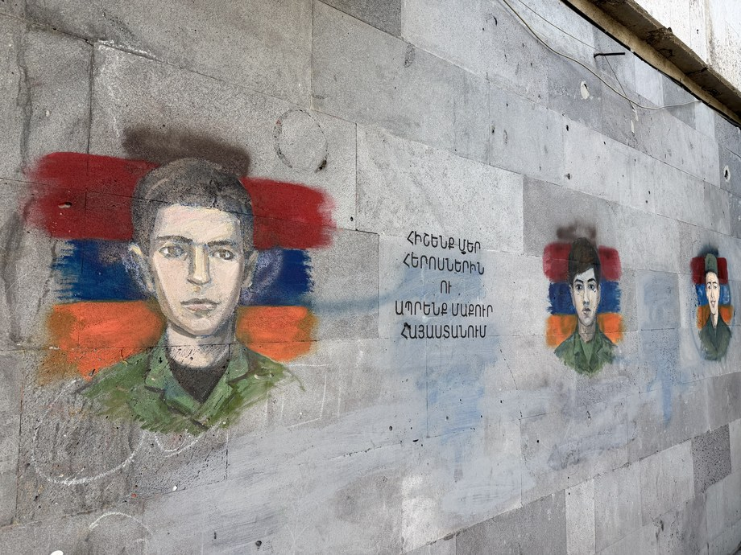
The walking tour shows you the parts and details of Yerevan that you would walk straight past on your own. She explained everything from the Armenian diaspora to the coffee culture, the pink-stone architecture and the plethora of street art, and the small things stuck with me most. Behind the grand facades on Abovyan Street are hidden courtyards where art galleries and cafes have moved in, which you would never find without someone opening the gate.
The tour ended at Anteb Restaurant, where we got to try local dishes, which was the best primer on a country's cuisine and helped me learn what to order the rest of the trip. Booking is free online and the guides work on tips, so bring cash.
The Cascade Art Complex
If there is one thing you have to do in Yerevan, it is the Cascade Art Complex. When you think of Armenia, you probably don't think of modern art. However, Yerevan is home to one of the best open-air modern art exhibits I've been to. The Cascade is a limestone staircase of 572 steps climbing the hillside (there are escalators inside if you're not up for the climb). The architect Alexander Tamanian, who drew up modern Yerevan, sketched the idea in the 1920s; construction started in 1980, stalled with the 1988 earthquake, and the project is technically still unfinished.
The experience starts with a large sculpture garden lined with an odd collection of sculptures from international artists (the fat bronze cat and the Roman warrior are Botero). You then head up into the Cascade, which is lined with sculptures, fountains and art on every terrace: a wall of round fountains, a checkered water feature, a half-submerged head and, my favorite, a set of metal divers. There are also exhibition halls inside the Cascade that are only open Friday to Sunday, 10 AM to 8 PM.
At the top you are rewarded with a view of Mount Ararat, Armenia's national symbol, in the distance behind the city. The best time to visit is before noon, when the sky is clearest, or in the evening, when the sculptures are lit up. Give it an hour, more if you go into the galleries. I enjoyed it so much that I ended up visiting it 3 times while I was in Yerevan.
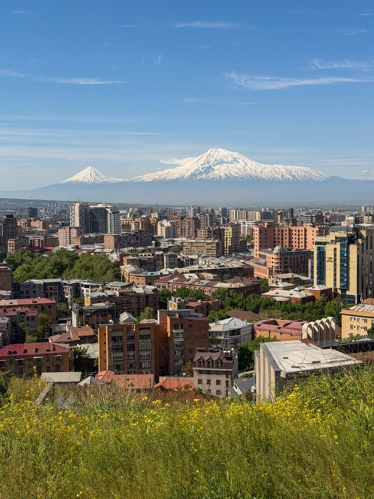
The Armenian Genocide Museum
-3-mob-2x.jpg)
Another important stop in Armenia is the Armenian Genocide Museum, on Tsitsernakaberd Hill overlooking the city. It's heavy, but important in understanding the struggles of the Armenian people, the diaspora and how it has shaped them today. The museum lays out how the genocide unfolded in stages, the death marches into the Syrian desert and the fact that only 34 countries in the world officially recognize it as a genocide today.
It is structured as an underground museum and a memorial of 12 leaning slabs around an eternal flame. The memorial itself was built in 1967 and is open around the clock: the 12 leaning basalt slabs stand for the 12 lost provinces of Western Armenia, and the 44-meter spire beside them is split in two for the Armenians inside and outside the country.
Practical notes: it's free and takes 2 to 3 hours to go through properly. The museum is a 30-minute walk uphill from the center or a 1,000 AMD taxi. If you're in town on April 24, Genocide Remembrance Day, expect the whole city to walk up there with flowers.
GUM & Vernissage Markets
Out of the two markets in Yerevan, GUM Market is the one I would prioritize since locals actually shop here. It is a working indoor market on Movses Khorenatsi Street, a 15-minute walk south of Republic Square.
Similar to any indoor market in this part of the world, you'll find fruits, vegetables, meats and clothing all sold in the same location. Dried fruit, nuts and candy fill the front hall, and the butchers and pickle stalls are in the back. Vendors will hand you things to try, and don't be shy about it: nobody pushes you to buy. Try the sujukh (walnut strings dipped in grape juice) and buy your Armenian brandy here! It's open daily, roughly 10 AM to 6 PM, and is busiest in the morning.
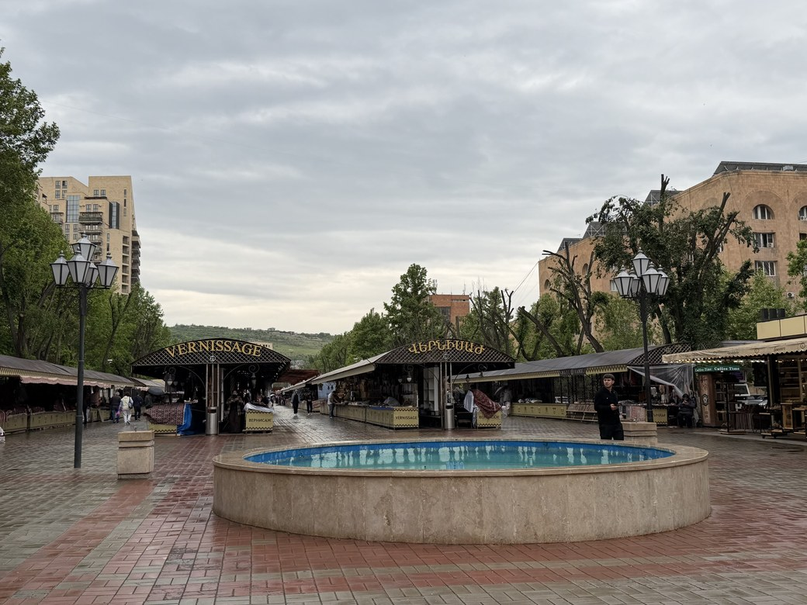
Vernissage Market is the open-air craft and souvenir market two blocks east of Republic Square. Here you'll find carpets, carved wood, Soviet medals, chess sets and a lot of fridge magnets.
It technically runs every day, but most stalls only open on Saturday and Sunday, so go on a weekend morning if you want to see it properly. It's great if you're looking for a souvenir, but GUM Market is more of a cultural experience.
Kond Neighborhood
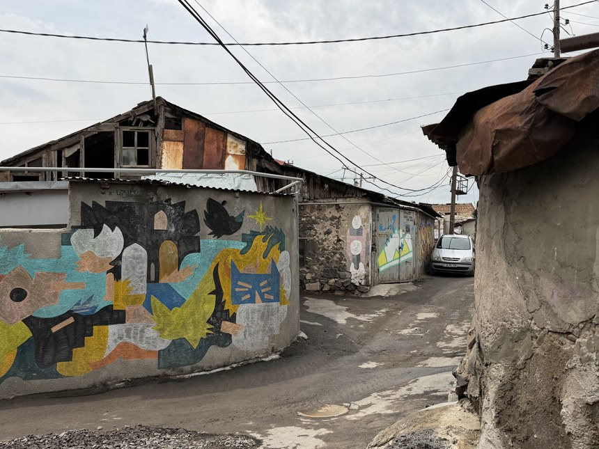
Kond is the oldest neighborhood in Yerevan and how the city looked before the Soviets rebuilt most of it. The name means "hilltop," and the street plan hasn't changed since the 1600s. Today, Kond is sadly pretty run-down, all concrete blocks and rusting sheet-metal roofs, and it sits in heavy contrast to the modern glass towers a block away.
Walk through the copper-lined Kond Pedestrian Tunnel (the zigzag lights are part of the design) and stop at Kond House Coffee, a few tables set in a local family's courtyard. The owner didn't speak English and called her daughter to translate my order even though pointing had already worked. Exploring Kond is worth an hour or two to see the other side of Armenia away from the grand facade of Republic Square or the Opera House.
The Blue Mosque

Walking distance from Kond is the Blue Mosque on Mashtots Avenue. It happens to be the only mosque in the entire country, built in 1765 under the Persian khans of Yerevan. When it was built, it was the largest of the city's eight mosques and the only one to survive the tsars and the Soviets. Iran paid to restore it in the late 1990s and it still serves a community of about 1,000 people. Entry is free, the courtyard garden is the nicest part, and women are asked to cover their hair to go inside.
Mother Armenia & Victory Park
Up on the hill above the Cascade lies Victory Park, home to the famous Mother Armenia statue. Towering above the city, you'll find similar statues across ex-Soviet cities (including Tbilisi and Gyumri). The statue itself is a 22-meter bronze woman holding a sword across her body, on a 33-meter pedestal. This platform also once carried a statue of Stalin until 1962.
The full Victory Park surrounding the statue is a true Soviet wonderland! Visit the classic WWII memorial with an eternal flame which was piled with fresh flowers from Victory Day when I visited. The area was also full of Soviet-era tanks, missiles and planes which were fun to look at. If you want more, you can also visit the Military Museum inside the pedestal, which costs a few hundred dram.
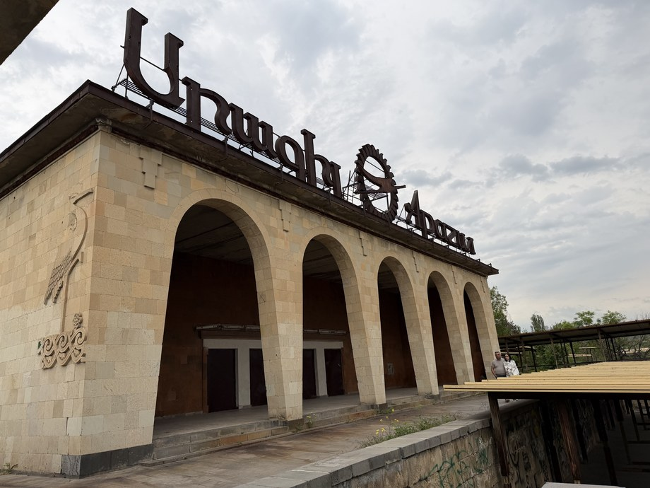
The rest of Victory Park is a faded Soviet amusement park with a Ferris wheel, a boating pond and the abandoned Aragil restaurant, which is only interesting if you like that sort of thing. Get there by climbing to the top of the Cascade and walking 10 minutes, or take a taxi. The view of the city is quite spectacular from here so go late in the afternoon when the light on the city is best.
More if You Have the Time
- Ararat Brandy Factory — Armenian brandy is the thing people here are quietly proud of, and the factory is the best place to dive headfirst into this world. The factory offers a tour which walks you through the barrel halls and storerooms, and finishes with a tasting of the best Armenian brandy. Stalin supposedly kept Churchill supplied with it. The tour will run you about $13 and it gets popular so book ahead in summer!
- Armenian National Opera and Ballet Theatre — one of the most popular things to do in Yerevan is to catch a performance here, and the house is known for its Russian-style ballet with an Armenian twist. It hosts opera and ballet through the season, so it is worth seeing what is on while you are there
- Matenadaran — a manuscript library at the top of Mashtots Avenue, and a stranger place than you'd expect. There are books dating back to the 5th century that Armenians hid for centuries against every invasion. Take the English tour for more background on each manuscript
- Moscow Cinema — a 1930s Soviet cinema that still operates to this day. The cinema is worth admiring from outside for its architecture, then sneak in for a peek at the marble relief of Soviet musicians and the wide staircases and heavy doors of the period inside. Worth ten minutes even if you only put your head into the lobby
Yerevan as a Base: The Day Trips
Yerevan's central location makes it the perfect base for day trips all across the country. If you don't want to worry about logistics, almost all organized tours run out of Yerevan, and expect to pay $15 to $30 for a full day. You can also navigate the country's extensive marshrutka system for independent travel. I promise it is much less intimidating than it sounds!
These trips are what I'd build a week around. Each of these has its own guide with the full details on getting there, what it costs and what’s worth your time once you arrive. I've also written a full 7-day Armenia itinerary to help plan your trip.
- Khor Virap, Geghard & Garni — the classic Armenian day trip covering the best monasteries and natural sites in the country and the one I would book first. It’s a full day out of the city and it covers most of what people come to Armenia for. Tours run for only $15 to $30
- The Orgov Observatory (ROT-54) — hands down my favorite experience in Armenia, visiting an abandoned Soviet radio telescope in the mountains with almost nobody there. You can rent a car or book a private tour here
- Lake Sevan — the easiest trip from Yerevan to visit the most beautiful lake in the country. Climb up to Sevanavank Monastery for the view over the bright blue water. The lake pairs well with the Orgov Observatory or the village of Dilijan if you have a car. It’s only 1.5 hours north and it’s where Armenians go when Yerevan gets too hot, so treat it as a half day rather than a whole one
- The Black Wall & an abandoned Soviet plane — two quick stops that are both easily paired with Lake Sevan & Orgov. The Black Wall is an abandoned mine face hidden under grassy hills at the end of a dirt road, with no sign and no other tourists; the plane is a Soviet Tu-134A mysteriously parked on the shore of a reservoir
- Gyumri — known as the Black City, Gyumri is Armenia’s second-largest city and a completely different experience than Yerevan. It is only about 3 hours away, which makes it an easy day trip
Where to Eat
Armenian food was the biggest surprise of the trip. The cuisine felt like a mix between Turkish, Persian and Georgian cooking, with the most popular dishes being a combination of spiced meat with lavash on the side. I cover the dishes to look for, from manti to lahmajun to khorovats, in the cuisine section of my Armenia itinerary.
There is also coffee everywhere, so much so that sitting down for one is how people here socialize. I enjoyed almost every meal in Armenia, and these are the places I'd go back to in Yerevan:
- Mayrig Yerevan — one of my favorite meals in Yerevan and coincidentally the fanciest place I ate. I tried Armenian manti here, which are little dumplings stuffed with meat and served with a layer of yogurt and tomato sauce. The Armenian version is baked until crispy rather than boiled, as in the Turkish version
-
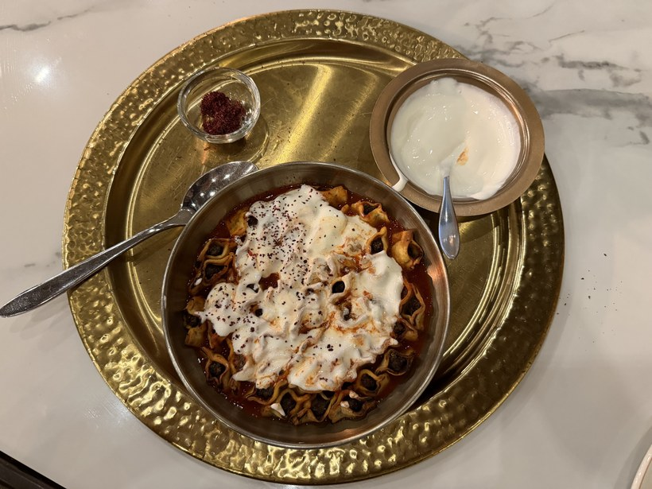
- Yerevan Tavern — a restaurant that came highly recommended by locals and a great dining experience with a live band playing traditional Armenian music every single night. I went here with a group of friends I had made on my day tour and we enjoyed a big spread of traditional cooking. This restaurant is where locals go for big occasions like anniversaries or birthdays
-
Elie’s Lahmajun — you can't go to Armenia without trying lahmajun. Elie’s Lahmajun had a portion large enough for two, served with eggplant dip and lemon
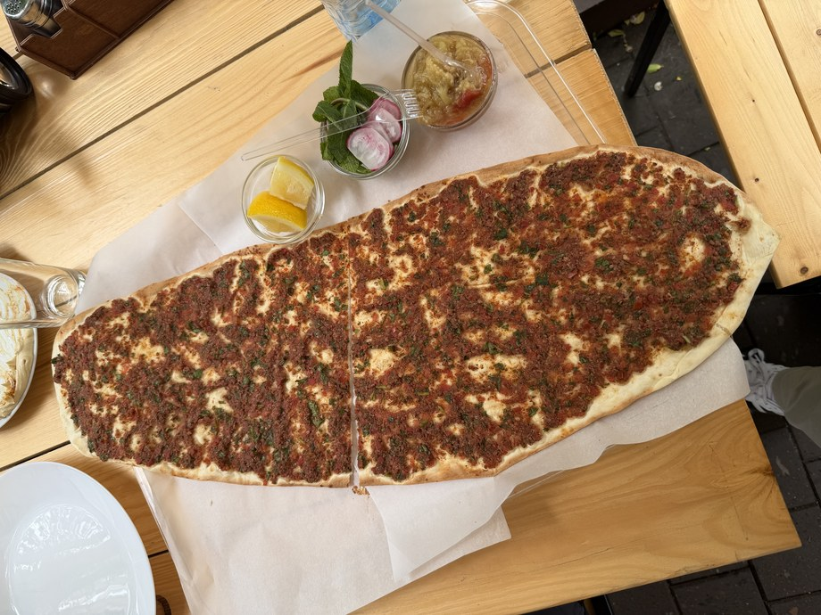
- Tumanyan Khinkali — a nice multi-story restaurant right in the center of town that serves Georgian food and other Caucasian dishes. I had the pelmeni (Russian dumplings), which were excellent
- AfroLab Specialty Coffee — the coffee shop I went back to most, a working roastery doing single-origin coffees. A great place to get your caffeine fix before exploring the city
- Lumen Coffee 1936 — a coffee shop dating back to 1936 with a classical Armenian interior covered in old wood paneling at the front. There is also a modern space in the back that looked like a co-working space. Spend an hour relaxing here and soaking in the ambiance
Where to Stay
Book your accommodation in downtown Yerevan, since most sites are within walking distance and rush-hour traffic makes staying out of town more hassle than it is worth. You'll find every sort of accommodation in Yerevan, from hostel dorms to fancy international hotels, and prices are cheap: around $8 for a dorm bed to $50 for a proper hotel in the center. I stayed in two different hostels during my time here.
Kantar Hostel — where I stayed first. Kantar had a great location, just a 5-minute walk from Republic Square. It was a decent hostel: mostly dorm-style with lockers and a few private rooms with balconies. The highlight was a free breakfast buffet including lavash, the salty string cheese, tomatoes, cucumbers and olives. The common room is also busy every night, so it's the easy place to meet people, and it's where I met a friendly German guy (also named Kevin) that I did the Orgov trip with.
Yellow Fox Hostel — a family-run hostel across town. It is very much someone's home, run by a woman and her mother with limited English and a lot of care. The hostel itself was passable, but pretty bare-bones so I'd recommend picking Kantar out of the two. It didn't help that I woke up with a scary Russian dude standing over me in the middle of the night!